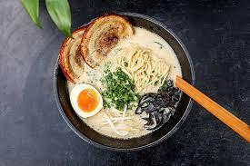

Lasagna

Japanese Noodle with Pork Broth
Tonkatsu Ramen is a rich noodle with thick pork broth which really brings out the umami taste inherent in the
pork bones used to make the soup
Ingredients
- Pork Bones
- Seaweed
- Tofu
- Bamboo Shoots
- Ramen Noodles
Steps
- Cook Pork Bone Broth
- Make Prawn Sauce
- Mix sauce and Broth
- Hot Water to Boil your noodles
- Serve while hot